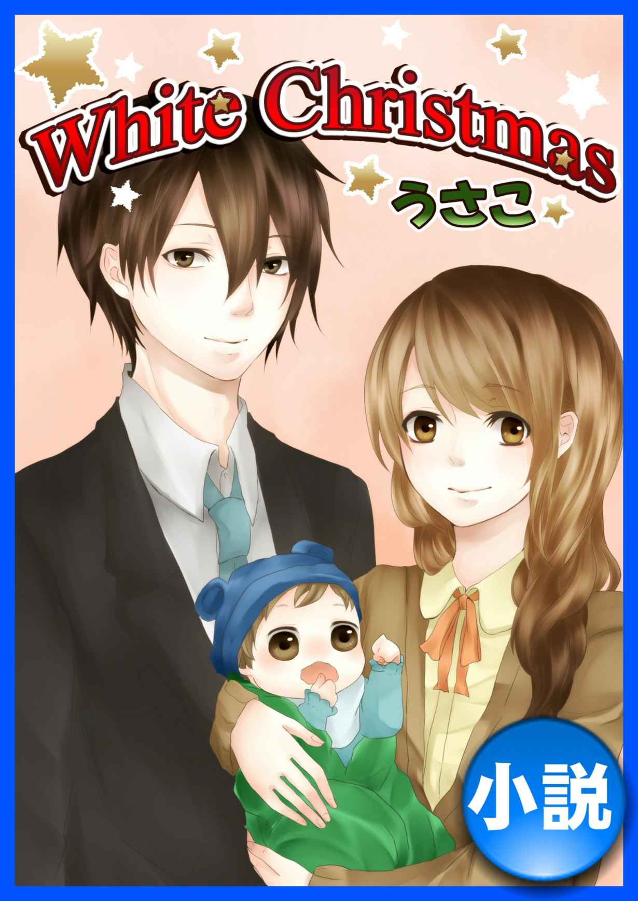
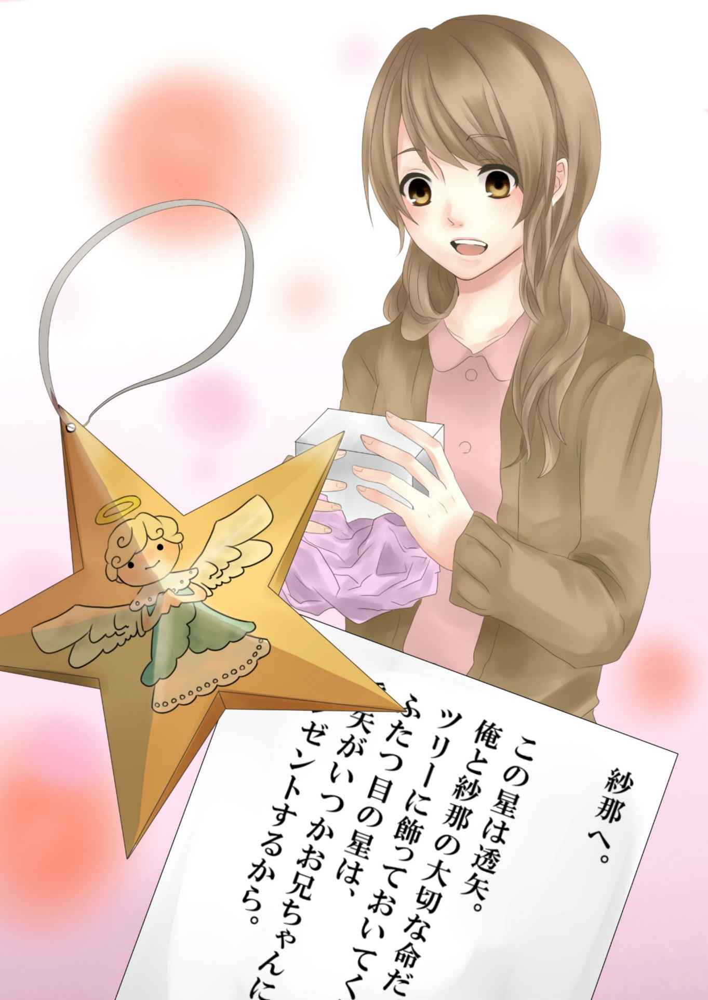
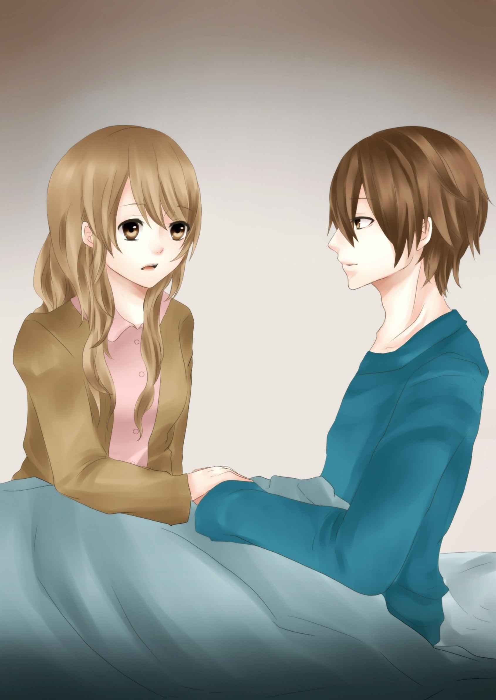
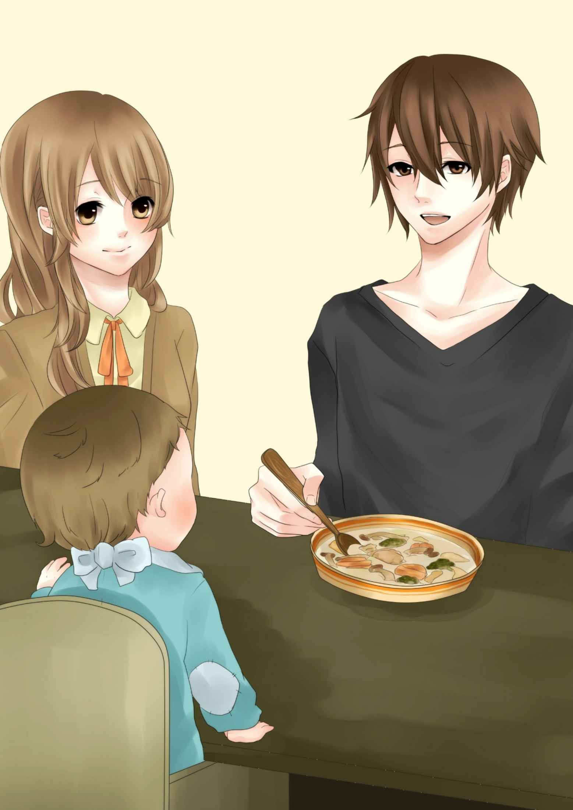
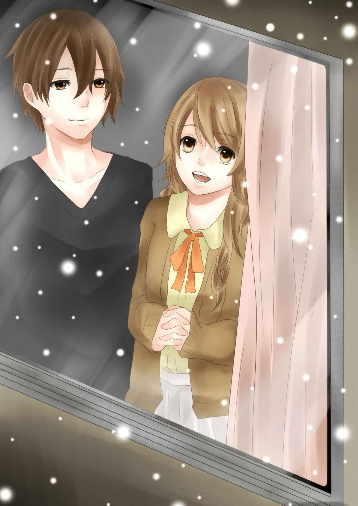

| White Christmas | |
| うさこ | |
| nettobunnkohosinosuna (2019) | |

ベッドの中、無意識に右手を伸ばす。
ひんやりとしたシーツの感触だけが、アタシの指先から伝わってくる。
「また、ソファーで寝ちゃったんだ」
アツは仕事から酔って帰って来ると、必ずリビングのソファーで寝てしまう。それは......、透矢が生まれてからずっと。
アタシと透矢を起こさないように......。
カーディガンを羽織ってそっと寝室のドアを開けた。
リビングには毛布にくるまりソファーで眠るアツの姿。スーツを着たままで......。
「アツ、......アツ、風邪ひいちゃうからベッドで寝て」
「んー、今、何時？」
「もうすぐ七時だよ？ 何時に帰って来たの？」
「五時過ぎかな。紗那、悪い。昼まで寝かせて」
スーツを脱がせてスウェットを着せると、アツはベッドに潜り込み再び眠りについた。
テレビをつけるとクリスマスソングが流れてくる。
「そっか、イヴだもんね」
アツの店ではクリスマスは大きなイベントをする為、アタシ達家族で一緒に過ごすことはない。夢を買いに来るお客様とクリスマスを共にする。お客様の中には真剣に恋心を抱いている人がいることも知っている。
それがアツの仕事。
「寂しい」
絶対に口にしてはいけない言葉。アタシと透矢の為に頑張ってくれてるから......。
「クリスマスは一緒に居てやれないから」
一年前に買ってもらった真っ白なツリーを眺めていた。
ツリーの下に小さな包みとカードが置いてあることに気付いた。
「何だろう......」
包みを開けると天使の絵が描いてある星の飾りがひとつ入ってた。

―――――
紗那へ。
この星は透矢。
俺と紗那の大切な命だ。
ツリーに飾っておいてくれな！
ふたつ目の星は、
透矢がいつかお兄ちゃんになった時
プレゼントするから。
敦志より。
―――――
「いつのまに、こんなの......」
嬉しくて、嬉しくて、涙が次々と溢れた。
「アツ、アツ......」
「んー、どうした？」
「これ」
キラキラと輝く星を見せた。
「あ、気付いたか？」
「うん、ありがとう。凄く嬉しいよ。カードもありがとう」
急に腕を引っ張られ、ベッドの上に倒れ込んでしまった。
「アタシ、プレゼント用意してない。どうしよう......」
「プレゼント？ そんなのもうもらってるぞ！」
「えっ？ どういう意味？ お客さんからとか？ アタシのいらない？」
「透矢」
「えっ？ 透矢がどうかしたの？」
「おまえバカだな。透矢がプレゼントって意味だろうが」
「......透矢が」
「そう。最高のプレゼントじゃね？」
そう言ったアツは、小さなベッドですやすやと眠る透矢を優しい眼差しで見つめてた。
そして、ギュッとアタシを引き寄せると、唇が触れるだけの温かいキスを落とした。
アツが仕事へ行くまでの時間を三人でゆっくりと過ごした。
時はあっという間に流れ、午後七時。お見送りをする時間になっていた。

「いってらっしゃい」
アタシの腕の中で透矢はキャッキャッと声を出して笑っている。
どんな時も笑顔でアツを送り出してあげたい......。
「透矢、いい子にしてるんだぞ！ 紗那、いってきます」
透矢には初めてのクリスマスイブ。
真っ白なツリーに色鮮やかな電球がキラキラと光る。
「透矢、キレイだね」
ミルクを飲み終えると透矢はそのまま眠ってしまった。
午後十一時少し前。
いつものようにラジオの電源をオンにした。大好きなアーティストの番組を聴くのが、一人で過ごす夜のアタシの楽しみだった。
たった五分間の番組。アタシの住む街出身のアーティストがパーソナリティを務めている。毎晩、リスナーからのリクエストハガキの中から一曲を選んで歌ってくれる。
イヴのこの日は 「きよしこの夜」だった。アツの為に録音も忘れない。
番組が終わり録音テープを聴きながら、小さなケーキとシャンパンとキャンドルを準備した。
アツはきっと酔って帰って来る。そしてそのままソファーで眠ってしまうだろう。
「アツ、喜ぶといいな」
リビングの明かりを消し、透矢が眠る寝室のドアをそっと開けた。
「透矢、おやすみ。メリークリスマス」
アツから預かっていたプレゼントを枕元に置き、頭を撫でてアタシも眠りについた。
二十五日。
目が覚めると朝六時を過ぎたとこだった。やっぱりアタシの隣にアツの姿はない。
リビングを覗くといつものように毛布にくるまるアツの姿がある。
「さむっ......」
急いで暖房のスイッチを入れ、アツに声を掛けた。
「アツ？ 風邪ひいちゃうって......。あっちで寝て」
「んーーー」
フラフラと寝室に入ったアツは直ぐに寝息を立て始めた。透矢が起きるまでの時間を使って洗濯や朝食の準備をする。
普段と何ひとつ変わらない。それでもアタシは幸せに満たされていた。世間の恋人達や家族とはちょっと違ったクリスマスだけど......。
昼過ぎに目を覚ましたアツと透矢と三人で、ちょっとだけクリスマス気分でケーキを食べた。透矢はほんの一口だけ、初めてのクリスマスだから特別に食べさせてみた。
「紗那、昨日のラジオは？」
「ちゃんと録音してるよ！ 聴く？」
カセットテープをガチャッとセットした。
「きよしこの夜か！ クリスマスだもんな。店じゃクリスマスソングなんて聴けないから何か新鮮だな」
そう言って笑ったアツ。
アタシに気を遣って言ってくれてるって分かってる。アツの優しさ。店内にはクリスマスソングがずっと流れてるって知ってるよ？ お店はクリスマスイベント真っ最中だから......。
「今夜は何の曲かな？ 楽しみだね」
透矢と遊ぶアツの優しい笑顔が好き。
ちょっと早めの夕食はクリームシチューにした。
「うん、うまい！」
美味しそうに食べてくれるアツを見てると、胸がキュンと熱くなる。

これから何年経ったとしても、アタシはきっとこの人に 《恋》 し続けるだろう。
楽しい時間も終わり、出勤時間が近付いてきた。
今夜も笑顔で見送る。
「いってらっしゃい」
「ラジオ忘れんなよ！ いってきます」
腕の中で眠る透矢を見つめながら、
「パパ、かっこいいね」って呟いた。
今夜も一人ラジオを聴く。
十五歳のクリスマスの夜に聴いたラジオは、今でもはっきりと覚えている。
一生に一度の最高のクリスマスプレゼントだったから......。
クリスマスツリーに灯りを点け、ココアを飲みながらラジオの始まりを待っていた。アーティストの楽しい話に思わず笑ってしまう。
番組の最後はリクエストコーナー。
「今日の曲は何かな？」
そんなことを思いながら窓越しにネオン街を眺めた。
ネオン街。
アタシとアツが出会った大切な街。街全体がクリスマス一色でキラキラと輝いていた。
―ラジオ―
「さて、今夜のリクエストハガキは玲ちゃんと志保ちゃん二人の女の子から十五歳でママになった親友へプレゼントと言うことで......」
「えっ？ 玲と志保ってまさか......」
ラジオから聴こえる話に、ただただ驚いてた。
「俺の地元の女の子からのリクエストハガキなんだけど、若い二人の勇気に俺からもプレゼントさせて欲しいと思って選びました。ママになった紗那ちゃんとパパになった敦志くんに贈ります。ハッピークリスマス」
アコースティックギターの音色と共に聴こえてくるジョン・レノンのハッピークリスマス。
嬉しくて、嬉しくて、アタシの目から溢れる涙は止まることを知らなかった。
「アツ、早く帰って来ないかな？」
興奮のあまり眠ることが出来ず、録音テープをツリーの下に置いてアツの帰りを待っていた。
―ガチャッ―
朝六時前、玄関の鍵が開く音が廊下に響いた。
「おかえりなさい」
「ただいま。どうした紗那、何かあったのか？」
「何もないよ。アツに伝えたいことがあったから起きて待ってた。ツリーの下のテープ聴いてみて」
「昨日のラジオ？」
「うん、そうだよ」
アツはラジカセにテープをセットすると、ソファーに座るアタシの隣に座った。
「紗那、これって......」
アツは目をまん丸にして驚いてた。
「ね、びっくりでしょ！ 二人にやられちゃった。ふふっ」
アタシの目からはまた嬉し涙が零れ落ちた。
「玲ちゃんと志保ちゃん、最高だな」
ふと、窓の外を見るとチラチラと雪が舞ってたんだ。
「すごーい。アツ、見て！ 雪、雪が降ってるよ」

ホワイトクリスマス。
この雪はきっと神様のイタズラ。
「透矢にも見せてやりてーな」
「うん、見せてあげたいね」
クリスマスツリーの灯りが揺れる中、おでこに、瞼に、頬に、そして唇に......たくさんの愛が降り注いだ。
十五歳の冬。
愛する旦那様と、愛しい我が子と最高のクリスマス。友達がくれた最高のプレゼント。忘れることのないクリスマス。
あれから二十年と少し。
今年もまた真っ白なツリーはキラキラと輝いて天使が描かれた星が四つ揺れている。
そして、二○一一年冬。
命が命を繋ぎ、アタシとアツの元へやってきた小さな天使はパパになった。
聖なる夜は貴方と共に......。
Happy Merry Christmas
～エンド～